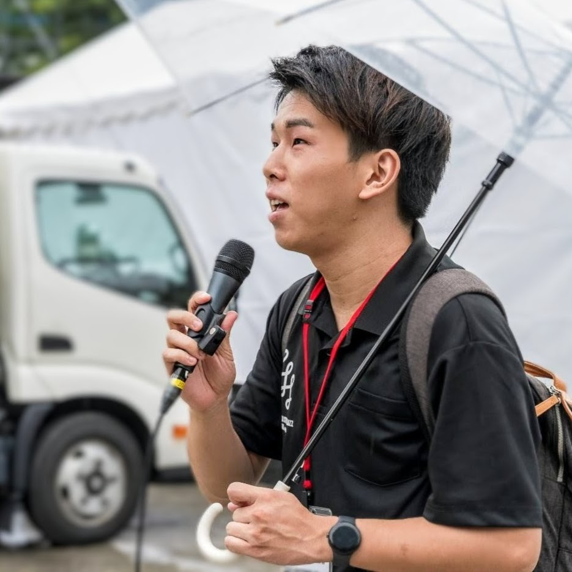

PROFILE
中根 世智 NAKANE Yoshitomo
持続可能な"お祭り"社会の実現へ
仙台拠点で"お祭り"運営のDXに取り組む WASSYOI 共同創業者。
ボランティア管理から証明書発行、LLM活用の問い合わせ対応まで、現場で必要な仕組みをそのまま内製している。
NOW
現在の活動
-
WASSYOI仙台お祭りDX運営事業 / 共同創業者・開発担当
-
公益社団法人 定禅寺ストリートジャズフェスティバル協会協会理事 / 実行委員会副実行委員長
-
StartWith個人事業主（フリーランスエンジニア）
-
東北大学大学院工学研究科 技術社会システム専攻
SKILLS
主な領域
Web App 開発
バックエンド開発
フロントエンド開発
LLM 統合
UI / UX デザイン
業務自動化
イベント企画・運営
CAREER
経歴
-
2025.09 –東北大学大学院工学研究科 技術社会システム専攻
-
2024.01 –（公社）定禅寺ストリートジャズフェスティバル協会協会理事 / 実行委員会副実行委員長
-
2022.04 –StartWith個人事業主（フリーランスエンジニア）
-
2021.05 –数学塾 MeTaフリーランスエンジニア